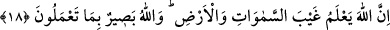

Nimetlerinden ve fazlından seni mahrûm bırakmadı.
Sultana hizmet ettiğinden dolayı ona minnet etme,
Aksine seni hizmetine kabul ettiği için sen ona minnettâr ol.
18. Şüphesiz Allah, göklerin ve yerin gizliliklerini bilir. Allah yaptıklarınızı
görendir.
“Şüphesiz Allah, göklerin ve yerin gizliliklerini” kullara gaib olan ve bilgisi
kendilerine gizli olan şeyleri “bilir. Allah” gizlide ve açıkta “yaptıklarınızı görendir.”
O halde içinizde olan şeyler nasıl ona gizli kalabilir ki? Bazı büyükler demişlerdir ki:
Allah Teâlâ sizin zâhirde yaptıklarınızın bâtınlarınıza yerleştirdiklerinin neticesi
olduğunu bilir.
Yerde şeker kamışı da olsa, sâde kamış da olsa,
Her yerin tercümanı orada biten bitkidir.
Kim amellerine ve hallerine bakar da onları kendi nefsinden görürse bu şirktir; kendi
nefsi için görürse bu da tuzaktır. Eğer Rabbinden, Rabbi ile ve Rabbi için görürse bu da
tevhiddir. Allah Teâlâ nimeti ve ihsanı ile bizi buna muvaffak eylesin!
Baklî der ki: Allah Teâlâ için gayb yoktur. Çünkü gayb setredilmiş bir şeydir. Bütün
gaybler Allah Teâlâ’ya ayândır. Ondan nasıl gâib olur ki, O kadîm olan basarıyla
herşeyi görmektedir. Basar orada tektir. Keşfü’l-esrâr’da der ki: Hucurât suresinden
Kur’ân-ı Kerîm’in sonuna kadar olan sûreler ‘mufassal’ diye isimlendirilir. Nebi (s.a.)
de şöyle buyurmuştur: “Allah Teâlâ Tevrat yerine bana seb’-i tuvel’i; yâni yedi uzun
sureyi vermiştir.”[223] Bunlar, Bakara’dan A’râf’a kadar olan sureler ve bir de Yûnus
suresi ya da Tevbe ile beraber Enfâl suresidir. Çünkü onun indinde bu ikisi tek suredir.
Kâmûs’ta böyle geçmektedir. “İncil yerine bana yüzlü sureleri, Zebur yerine mesânîyi
verdi ve Rabbim mufassal ile beni üstün tuttu.”[224] Başka bir rivâyette de Efendimiz
(s.a.) şöyle buyurmuştur: “Bana zikr-i evvelden Bakara suresi verildi, Mûsâ (a.s.)
levhasından Tâhâ ve Tâ Sîn’ler verildi. Arşın altından Kitabın Fatihaları ve
Bakara’nın sonları verildi. Mufassal ise ilâve ikrâm olarak verildi.”[225]
Fethu’r-Rahmân’da şöyle geçer: Şâfiî mezhebinde râcih olan görüş ve Ebû
Hanife’den rivayet edilen mutemed görüşlerden birine göre Hucurat sûresi mufassal
sûrelerin ilkidir. Ebû Hanife’den rivayet edilen diğer bir mûtemed görüşe göre ise
mufassalın başı kaf suresidir. Efendimiz (s.a.) şöyle buyurmuştur: “Rabbim beni
mufassal ile üstün tuttu.”[226] Kur’ân-ı Kerîm’de mufassal Hâ-Mîm’lerden sonra
Kur’ân-ı Kerîm’in sonuna kadar olan kısa surelerdir. Mufassal denmesinin sebebi